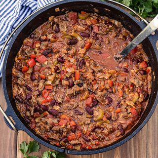

Jamie's Spicy V8 Chili

Description
This chili is very soupy and contains a lot of protein from all the beans as well as a good flavor provided by the complex Spicy V8 liquid base. I like to have a lot of liquid to soak up the Chee Chee's cornbread I also cook in the cast iron skillet to go along with this dish.
Ingredients
- 4 12 oz. cans kidney beans, light and dark
- 1 64 oz. container of Spicy V8 or equivalent store brand
- 2 12 oz. cans of Ro-Tel
- 1 cup of diced fresh yellow onions
- 2 tbsp. chili powder
- 1 jalapeno, diced and deseeded
- 1 can crushed tomatoes
- 4 tbsp. butter
- 1 lb ground beef
- 16 oz shredded sharp cheddar cheese
Directions
- Melt butter in a large skillet and sautee 3/4 cup of onions until tender and caramelized
- Move cooked onions to soup pot
- In same skillet, brown the beef
- While beef is browning, add all other ingredients in soup pot, draining canned juice from all cans of beans before adding. Heat to simmering.
- When beef is browned, drain and add meat to soup pot.
- Serve topped with cheddar cheese and top with remaining chopped onions.
Other Recipes by Jamie